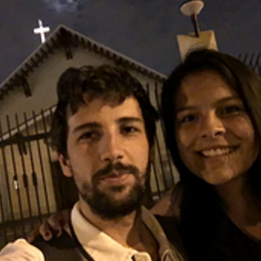

el-mark (the coder) by Mark Harmsen
Here I'll talk about one part of me. The coder part of me.

Since I was very young I liked computers. I always knew they were powerful machines. So I became to understand they were amazing tools, invented to help us. Then I had a dream: To know how they work, play with them and use them for helping people grow.
In the next table I'm going to mention important moments, decisions or thoughts related that dream i had:
| Age (Aprox) | Moments, decisions or thoughts | Explanation |
|---|---|---|
| 6 | Moments | My first introduction to a computer with my father and brothers. Personal computers were starting to be common. |
| 9 | Moments | I' started playing with them, and trying to know how they work. |
| 14 | Decisions | I' took some lessons of how to create flash motions |
| 22 | Moments/Decisions | I created my first web: entodoslados.com |
| 23 | Thoughts | I understood the best proyects where done by a group of people. To reach grate objetives work with people and for people was the best idea. |
| 24 | Thoughts | Understanding why we are here and what for we live. |
| 26 | Decisions | Enrolling in Irhonhack bootcamp in barcelona. |
I'll do a list of 10 things I like to do or I'ld love to do
- Know how to programe a cool web.
- Create or innovate a web for helping education.
- Play with drones.
- Know how to use arduino.
- Make teaching videos with digital pen.
- Instruct other educators how to Make teaching videos with digital pen.
- Create a education comumunity around tecnology.
- Make cool proyects with frinds involved in tecno.
- Change lives through education.
- Never stop creating, innovating, problem solving and programming, like a hobbie or like work.